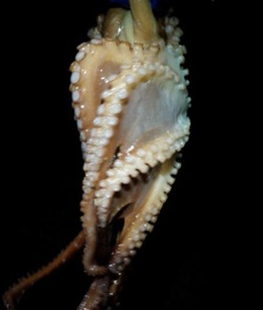
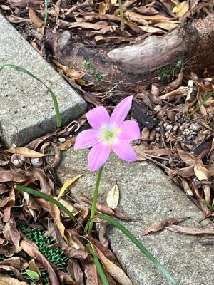

うるがいの話 ある日
最新: イイダコとは【うるがいの話 ある日】とは 一日だけのプログです
『うるがいの話』の最新一日だけのプログで、通信料が少なく経済的だ。カニの画像をクリックすると全ての日付が載る『うるがいの話』サイトを表示します
|
|
【うるがいの話】 うるがい(ｳﾙｶﾞｲ urugai)とは、『もずくがに』の名前でとても大きくなります。 |
|---|---|
|
|
【カミマヤーの話】 猫のことを方言でマヤーといいます。カミマヤー（kamimayaa）とは、神の猫のことです。 |
|
【たながぁの音楽】 たながぁ（ﾀﾅｶﾞｰ tanagaa）とは手長えびのことで、何種類かあり大きいのは車 エビぐらいになります。 |

|
【ぶながぁの話】 ぶながぁ(ﾌﾞﾅｶﾞｰ bunagaa)とは、赤い髪の毛、赤い身体、そして身長は１ｍ２０ｃｍ ぐらい、川の蟹を食べているの目撃された。場所は沖縄県国頭郡大宜味村のと ある村僕の隣近所に住んでいる爺さんから、聞いた話です。 |
|
|
【ギーマの話】 ギーマ(giima)とは、山原の里山に咲くスズランに似た、 花を付けます。実は食べられます、 気が付くと口の周りが紫になっています。 |
2025年10月25日 (土）イイダコとは
15:40
イイダコ、夜食べました。千円では高いっす。ところでイイダコ
とは何かというと、私が中学性のころ、まだ寒い春の夜、大潮で
潮が干上がった浅瀬で、懐中電灯で見つけて銛で獲られるタコの
ことで、田舎ではシガイと言っていました。標準語では、イイダ
コ（飯蛸）というようです。ネットを検索したら、伊是名の誰か
さんのプログに、銛で獲られたイイダコの写真がありました。ま
さしくこれです。

残念ながら、もう本物を見ることはないと思います。朝のルーチ
ンである、自分のウエブサイトの自動検索ロボットを、動作させ
ようとすると
UiPath Assistantを読み込めません
Orchestratorからサイアウトして再度ログインすると普段に戻り
ました。いくつかロボットを作成しているのですが、その内の一
つが、検索サイトの表示方法が変わってしまって、数か月前から
動きません。修正しようと、自動化の定義ファイルを開くが無効
になっていた！、そこで諦めました。また、落ち着いた挑戦しよ
うと思います。
奥武山公園の池には、綺麗なスイレンが沢山ありました。
家の庭にも、突如として絵本に出てくるような花が咲きました。
